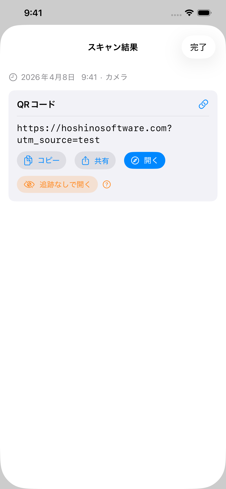
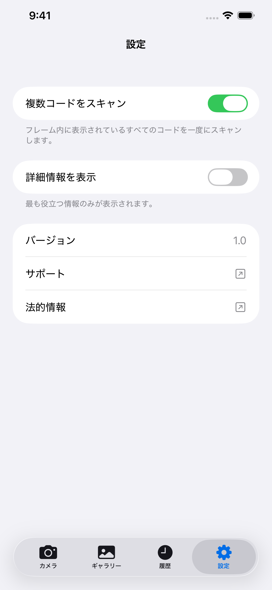

万能スキャナー
万能スキャナー は、iPhone のカメラまたはフォトライブラリの画像を使ってバーコードや QR コードをスキャンします。 完全オフラインで動作し、クラウドには何も保存せず、広告も表示しません。
ダウンロード
アプリはまだ公開されていません。公開後、App Store リンクと QR コードがここに表示されます。

万能スキャナーは App Store から無料でダウンロードできます。アカウント不要。iOS 26 以降が必要です。
サポート
ご質問、バグの報告、アプリのサポートが必要な場合はご連絡ください。すべてのメッセージを読んでいます。
お問い合わせ前に
よくある問題の多くは、下記のマニュアルとFAQに記載されています。まず以下をご確認ください。
- カメラが使えない場合：iPhoneの設定 → プライバシーとセキュリティ → カメラ → 万能スキャナーのアクセスを有効にしてください。
- 履歴が見つからない場合：履歴タブをタップしてください。履歴は6か月間保存され、最大1,000件までです。
- コードがスキャンできない場合：照明を明るくし、コードをしっかり固定してください。画像ファイルがある場合はギャラリーモードをお試しください。
- アプリが強制終了する場合：強制終了してから再起動してください。問題が続く場合は、iPhoneのモデルとiOSバージョンをお知らせの上、メールでご連絡ください。
よくある質問
- インターネット接続は必要ですか？
いいえ。万能スキャナー は完全にオフラインで動作します。 - データは収集されますか？
いいえ。どこにもアップロードされません。スキャン履歴はデバイス上にのみ保存されます。 - フォトライブラリ全体にアクセスしますか？
いいえ。ギャラリータブでは、システムの写真ピッカーを使って 1 枚の写真を選択します。万能スキャナー はライブラリへのアクセス権限を受け取ることはありません。 - マルチコードモードが少し時間がかかるのはなぜですか？
カメラは、結果を表示する前に視野内のすべてのコードを確実にキャプチャするため、短いフレームの時間枠にわたってコードを収集します。 - スキャン履歴はどのくらい保存されますか？
6 ヶ月以上経過したエントリは自動的に削除されます。履歴は 1,000 件にも制限されており、新しいもののために最も古いものが削除されます。 - なぜリンクに自動的に移動しないのですか？
これは意図的なものです。偽の QR コードや悪意のある QR コードは、駐車場やレストランのテーブルなどで一般的に見られます。開く前に URL を表示することで、安全かどうかを確認できます。
マニュアル



カメラ
カメラタブを開くと、すぐにスキャンが始まります。バーコードや QR コードにスマートフォンを向けると、アプリが自動的に検出します。カメラのアクセス許可が必要です。まだ許可していない場合は確認ダイアログが表示されます。設定を開くをタップし、万能スキャナー のカメラアクセスを有効にしてください。
- 懐中電灯: 暗い環境を照らすには懐中電灯ボタンをタップします。背面カメラでのみ使用できます。
- フロントカメラ: 背面カメラと前面カメラを切り替えるには回転ボタンをタップします。背面カメラが使用できない場合（故障など）に便利です。
ギャラリー
ギャラリータブでは、既存の画像からコードをスキャンできます。写真を選択をタップして、ライブラリから任意の画像を選んでください。選択した特定の写真だけがアプリと共有されます。万能スキャナー はフォトライブラリ全体へのアクセスを要求しません。
写真を選ぶと、アプリが即座にスキャンして結果を表示します。コードが見つからない場合は、アラートでその旨をお知らせします。
履歴
すべてのスキャンは履歴タブに自動保存されます。スキャン結果は6 ヶ月間保持され、履歴には最大1,000 件まで保存されます。上限に達すると、最も古いものから自動的に削除されます。
- 過去のスキャンを見る: 任意の行をタップして、完全な結果を再度開きます。
- 1 件削除: 行を左にスワイプして削除をタップします。
- すべて削除: 右上のゴミ箱アイコンをタップします。
- ソースラベル: 各エントリには、カメラ、ギャラリー、または共有のどこから来たかが表示されます。
設定
マルチコードモード
デフォルトでは、万能スキャナー は1 つのコードを見つけると停止します。マルチコードモードをオンにすると、一度に最大5 つのコードをスキャンできます。名刺、製品シート、複数のコードが並んだ画像に便利です。
マルチコードモードが有効な場合、カメラは最初の検出後も短時間スキャンを続け、結果を表示する前にすべての見えているコードを収集します。そのため、シングルコードモードよりわずかに時間がかかります。
詳細情報を表示
詳細情報を表示をオンにすると、各スキャン結果の横に技術的なメタデータが表示されます。QR バージョン、誤り訂正レベル、マスクパターン、バーコード構造（スタート/ストップ文字、チェックデジット）などです。この情報はスキャン結果ページと履歴タブの各行に表示されます。
スキャン結果
コードが検出されると、万能スキャナー は何もする前にその内容を表示します。常に生データが最初に表示され、コピーと共有ボタンが並びます。コードに URL が含まれている場合（QR コードでよく見られます）、開くボタンが表示されます。タップすると、アプリ内ブラウザではなくデフォルトのブラウザでリンクが開きます。閲覧データは収集されません。
万能スキャナー は特殊なコードの種類を自動的に認識し、状況に応じたアクションを表示します：
| コードの種類 | できること |
|---|---|
| 🌐 URL / リンク | デフォルトのブラウザで開く · コピー · 共有 |
| 📶 Wi-Fi ネットワーク | 直接接続 · パスワードをコピー |
| 👤 連絡先 (vCard / MECARD) | プレビュー付きで連絡先に保存 |
| 📅 カレンダーイベント | カレンダーに追加 |
| ✉️ メール | 下書き済みメールを作成 |
| 💬 SMS / メッセージ | メッセージを送信 |
| 📞 電話番号 | 電話をかける |
| 📍 位置情報 / ジオ | マップで開く |
| 📹 FaceTime | FaceTime または FaceTime オーディオ |
| ₿ ビットコイン | アドレスをコピー |
| ✈️ 搭乗券 | Aztec / PDF417 から解析されたフライト詳細 |
（設定で）詳細情報を表示をオンにすると、結果ページに 2 つの追加セクションが表示されます：
- デコードされたデータ: 解析前の、バーコード内にエンコードされた生の文字列。
- 構造: バーコードの技術的な内訳。スタート/ストップ文字、チェックデジット、ガードパターン、コードの種類に応じた類似要素。
QR コードの場合は、バージョン番号、誤り訂正レベル、マスクパターンを示すメタデータチップも表示されます。
トラッキングパラメータの検出
URL にトラッキングパラメータが含まれている場合、万能スキャナー はトラッキングなしで開くボタンを表示します。これには UTM タグ、Facebook、Google Ads、Microsoft、TikTok などのクリック ID が含まれます。タップすると、それらのパラメータが削除された状態でリンクが開きます。追跡されることなく同じページにアクセスできます。
別のアプリからスキャン
メッセージ、メール、ドキュメントビューア、ウェブブラウザなど、他のアプリ内の写真に表示されたコードを、そのアプリを離れることなくスキャンできます。
共有を使う:
- ギャラリーまたは任意のアプリで画像を開き、共有ボタンをタップします。
- 表示されたアプリの一覧から万能スキャナーを見つけてタップします。見つからない場合は一覧の末尾までスクロールし、その他をタップしてください。
- アプリが開き、画像を自動的にスキャンします。
アクションを使う:
- ギャラリーまたは任意のアプリで画像を開き、共有ボタンをタップします。
- アプリ一覧の下のアクション行をスクロールしてScan for Codesをタップします。
- アプリが開き、画像を自動的にスキャンします。
ホーム画面ウィジェット
ホーム画面にウィジェットを追加して、アプリへのショートカットとして使用できます。タップするとカメラが直接開き、スキャンの準備が整います。ウィジェットは 3 つのサイズ（小・中・大）で提供されているので、ホーム画面のレイアウトに合わせて選択できます。
- ホーム画面の空いている場所を、アイコンが揺れるまで長押しします。
- 左上の+ボタンをタップします。
- 万能スキャナーを検索します。
- サイズを選択してウィジェットを追加をタップします。
- 後からウィジェットを長押ししてウィジェットを編集を選択することで、サイズを変更できます。
Control Center
Control Center は、画面右上の角から下にスワイプすると現れるパネルです。万能スキャナー のボタンを追加すると、ロック画面や他のアプリの使用中など、どこからでもワンタップでカメラを起動できます。
- 右上の角から下にスワイプして Control Center を開きます。
- +ボタンをタップして編集モードに入ります。
- 一覧から万能スキャナーを見つけてタップして追加します。
- 編集モード中にドラッグして位置を変更したり、サイズを変更したりできます。
対応コード一覧
| コード | 備考 |
|---|---|
| QR Code | 最も一般的な 2D コード。URL、Wi-Fi、連絡先などに使用 |
| Micro QR | スペースが限られた小さなラベル向けの QR Code のコンパクト版 |
| Aztec | 搭乗券や交通機関のチケットに使用 |
| Data Matrix | 製造業、医療、物流で一般的に使用 |
| PDF417 | 運転免許証、搭乗券、配送ラベルに使用 |
| Micro PDF417 | 医薬品包装などの小型品向けのコンパクトな PDF417 |
| EAN-8 | 小型商品向けの短い小売バーコード |
| EAN-13 | 世界中の多くの消費者製品に見られる標準的な小売バーコード |
| UPC-E | 米国・カナダの小型小売包装に使用されるコンパクトなバーコード |
| Code 39 | 最も古いバーコードの 1 つ。産業環境でよく見られる |
| Code 93 | Code 39 の高密度後継版 |
| Code 128 | 物流や配送で広く使われる高密度バーコード |
| ITF-14 | 段ボール製の配送箱に印刷された 14 桁のバーコード |
| Codabar | 図書館、血液バンク、一部の宅配会社で使用 |
| GS1 DataBar | 農産物や生鮮食品などの小型品向けのコンパクトな小売バーコード |
| GS1 DataBar Expanded | 重量や有効期限などの追加データを持つ拡張バリアント |
非対応：
| コード | 備考 |
|---|---|
| EAN-2 / EAN-5 (アドオン) | EAN-13 に付加される短い数字補足。雑誌の号数と書籍の価格表示に使用 |
| rMQR | 細長いラベル向けに設計された新しいコンパクトな QR バリアント、矩形マイクロ QR |
| MaxiCode | UPS が配送ラベルに使用する 2D ドットマトリックスコード |
| SP Code | 音声データをエンコードする日本のアクセシビリティバーコード |
| 郵便バーコード | 各国の郵便サービスが使用する 4 ステート郵便バーコード（USPS Intelligent Mail、Royal Mail、Australia Post、Japan Post など） |
| 独自アプリコード | 発行元のアプリのみがスキャンできるカスタム視覚コード |
デモコード
カメラでこの画面から直接スキャンするか、スクリーンショットを撮ってギャラリータブをお使いください。
 | QR Code トラッキングパラメータ付き URL https://hoshinosoftware.com?utm_source=review&utm_campaign=demo |
 | QR Code Wi-Fi ネットワーク WIFI:S:example-wifi;T:WPA;P:example-password;; |
 | QR Code メール mailto:test@example.com |
 | QR Code 連絡先 (vCard) BEGIN:VCARD VERSION:3.0 N:Last;First FN:First Last ORG:Company TITLE:Job Title ADR:;;Street;City;CA;90401;USA TEL;WORK;VOICE: TEL;CELL:+1234567890123 TEL;FAX: EMAIL;WORK;INTERNET:example@example.com URL:https://example.com END:VCARD |
 | Micro QR 小さなラベル向けコンパクト QR HELLO |
 | Aztec (Full) 交通機関 / 搭乗券 AZTEC-DEMO-CODE |
 | Aztec (Compact) 小さなラベル向けコンパクト版 AZTEC-DEMO-CODE |
 | Data Matrix (Square) 製造業 / 医療 DATAMATRIX |
 | Data Matrix (Rectangular) 細長いラベル向け矩形バリアント DATAMATRIX |
 | PDF417 身分証明書 / 配送ラベル PDF417 SAMPLE DATA |
 | Micro PDF417 小型品向けコンパクト PDF417 MICROPDF417 SAMPLE DATA |
 | EAN-13 小売バーコード 5901234123457 |
 | UPC-E コンパクト小売バーコード（米国/カナダ） 01234565 |
 | Code 128 物流 / 配送 CODE-128-DEMO |
 | ITF-14 配送箱バーコード 12345678901231 |
 | GS1 DataBar 小型品向けコンパクトバーコード 0112345678901231 |
法的情報
プライバシーポリシー
最終更新：2026年4月
はじめに
万能スキャナーはシンプルな原則に基づいて作られています：あなたのデータはあなたのものです。このプライバシーポリシーは、アプリがどの情報にアクセスし、どのように扱われるかを説明します。
カメラへのアクセス
アプリはバーコードやQRコードをリアルタイムでスキャンするために、デバイスのカメラを使用します。カメラの映像はデバイス上でのみ処理されます。画像や動画フレームが保存、アップロード、または共有されることは一切ありません。
スキャン履歴
スキャン結果はAppleのデバイス内ストレージ技術を使用してデバイス上にローカル保存されます。このデータはデバイスを離れることはなく、サーバーに送信されることもありません。スキャン履歴はいつでもアプリ内から削除できます。
インターネット接続不要
万能スキャナーは完全にオフラインで動作します。アプリはネットワークリクエストを行いません。データはデバイスを離れることはありません。
データ収集なし
個人情報の収集、保存、処理は一切行いません。アプリはアカウントや登録を必要としません。
サードパーティサービス
万能スキャナーはサードパーティの分析、広告、またはトラッキングサービスを使用しません。いかなるデータもサードパーティと共有されません。
子どものプライバシー
個人データを収集しないため、万能スキャナーはすべての年齢のユーザーに安全であり、COPPAおよび世界各国の同様の規制に準拠しています。
ポリシーの変更
このプライバシーポリシーは随時更新される場合があります。変更は掲載後すぐに有効になります。定期的にこのページをご確認ください。
お問い合わせ
このプライバシーポリシーに関するお問い合わせ：support [at] hoshinosoftware [dot] com
利用規約
最終更新：2026年4月
規約への同意
万能スキャナーをダウンロードまたは使用することにより、この利用規約に同意したものとみなされます。同意しない場合は、アプリをご使用にならないでください。
ライセンス
Hoshino Softwareは、本規約およびAppleのApp Store利用規約に従い、Appleデバイスで万能スキャナーをご使用いただくための個人的・非譲渡・非独占的ライセンスを付与します。
許可された使用
万能スキャナーは合法的な目的のためにのみご使用いただけます。適用される法律または規制に違反する方法でアプリを使用しないことに同意します。
無保証
万能スキャナーは明示または黙示のいかなる保証もなく「現状のまま」提供されます。アプリがエラーなく動作すること、中断なく利用できること、または特定の目的に適していることを保証しません。
責任の制限
適用法が許容する最大限の範囲において、Hoshino Softwareは万能スキャナーの使用または使用不能から生じる直接的・間接的・付随的・特別・結果的損害について責任を負いません。
規約の変更
この利用規約は随時更新される場合があります。変更後もアプリを引き続き使用することは、改訂された規約に同意したものとみなされます。
準拠法
本規約は、Hoshino Softwareが事業を行う管轄地域の法律に準拠します。
お問い合わせ
この利用規約に関するお問い合わせ：support [at] hoshinosoftware [dot] com